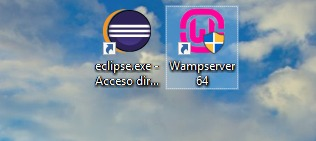
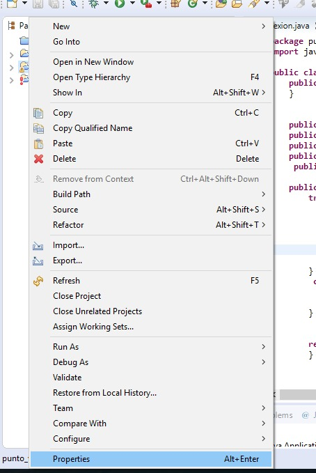
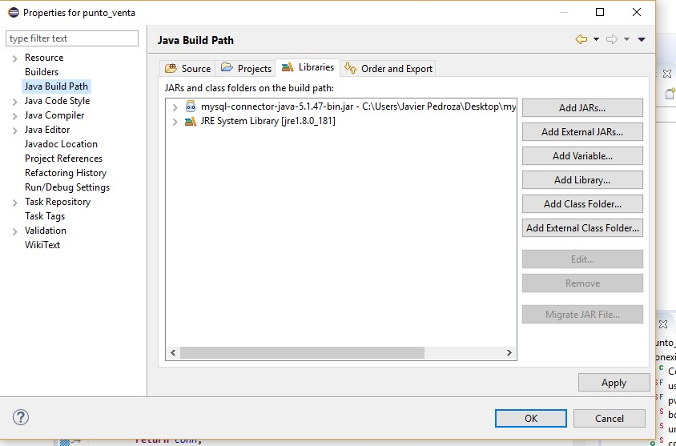
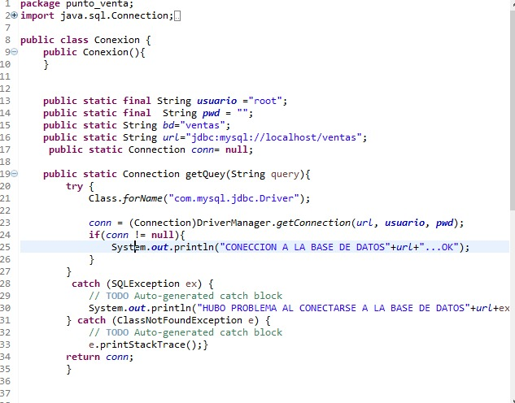
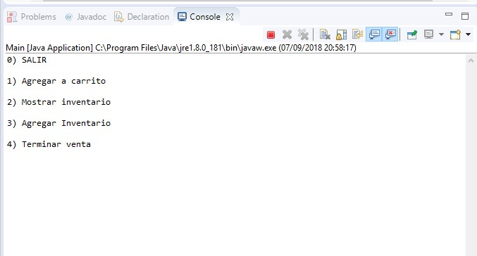
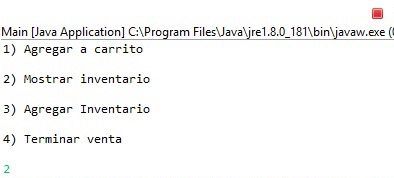
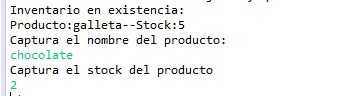

Se necesita tener una pc con ECLIPSE y un gestor de base de datos. En mi caso utilizare Wamp y Lamp dependiendo de tu sistema operativo.

Ahora a añadir el conector a nuestro espacio de trabajo.Esto es mas facil de lo que parece solo que en internet no
hay mucha documentacion.

Ahora damos click en Java Build Path y añadimos el conector desde la ubicacion donde lo hayamos guardado.

Ahora configuraremos la conexion entre nuestro entorno de desarrollo y nuestra base de datos.

Ahora veremos el funcionamiento de los querys ya implementados en un punto de venta basatente sencillo.

Ahora vemos los productos que podemos comprar.

Ahora añadiremos un producto a nuestra compra.
Ahora pedimos un reporte del id de la compra y su total.